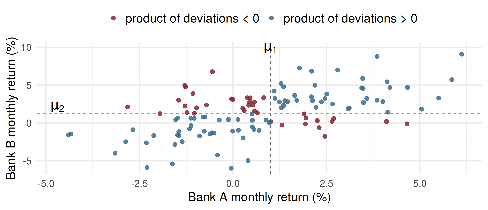
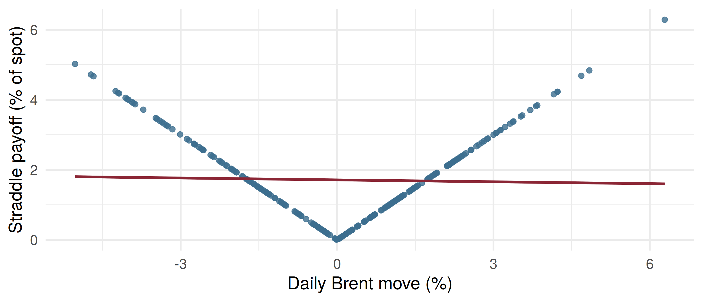

Code
by_definition_5.9 by_linearity
1509 1509 Expected Values of Functions of Random Variables and Covariance
ADA University, School of Business
Information Communication Technologies Agency, Statistics Unit
2026-09-24
By the end of this lecture, you will be able to:
Compute \(E[g(Y_1, Y_2)]\) from a joint probability table or a joint density (Definition 5.9)
Use Theorems 5.6–5.8 to take expectations of sums term by term, with or without independence
Apply Theorem 5.9 to factor \(E[g(Y_1)h(Y_2)]\) when \(Y_1\) and \(Y_2\) are independent
Compute \(\text{Cov}(Y_1, Y_2)\) and \(\rho\) by Theorem 5.10, and read their sign
Explain why independence implies zero covariance, but zero covariance does not imply independence
Wackerly §§5.5–5.7
Wednesday (§5.4): independence means the joint distribution is the product of the marginals, everywhere. It ended on co-movement: at correlation 0.6, \(P(\text{both fall}) = 0.352\), not \(0.5 \times 0.5 = 0.25\).
We used that word, correlation, before defining it. Today we define it, as one expected value of a function of two variables: \(E[(Y_1 - \mu_1)(Y_2 - \mu_2)]\).
First, the general tool: \(E[g(Y_1, Y_2)]\) for total revenue, a product of shares, a spread.
The appliance retailer’s peak hour
A Baku home-appliance store sells air conditioners at 1,200 AZN and refrigerators at 900 AZN. In the Saturday peak hour it sells \(Y_1\) air conditioners and \(Y_2\) refrigerators.
What revenue should it expect in that hour, and do the two product lines sell together?
Revenue \(R = 1200Y_1 + 900Y_2\) is a function of two random variables. Chapter 4 told us how to find \(E[g(Y)]\) for one.
Definition 5.9
Let \(g(Y_1, \ldots, Y_k)\) be a function of discrete random variables with probability function \(p(y_1, \ldots, y_k)\). Then \[E[g(Y_1, \ldots, Y_k)] = \sum_{\text{all } y_k} \cdots \sum_{\text{all } y_1} g(y_1, \ldots, y_k)\, p(y_1, \ldots, y_k).\] For continuous variables with joint density \(f\), the sums become integrals over \((-\infty, \infty)\).
In words: weight each value of \(g\) by the probability of the cell that produces it, and add. Taking \(g(Y_1, Y_2) = Y_1\) gives back Definition 4.5 through the marginal density.
| \(y_1 \backslash y_2\) | 0 | 1 | 2 | \(p_1\) |
|---|---|---|---|---|
| 0 | .30 | .15 | .05 | .50 |
| 1 | .10 | .15 | .10 | .35 |
| 2 | .02 | .05 | .08 | .15 |
| \(p_2\) | .42 | .35 | .23 | 1 |
Each cell carries a revenue \(g(y_1, y_2) = 1200y_1 + 900y_2\): from 0 AZN (nothing sold) to 4200 AZN (two of each).
Definition 5.9, cell by cell: \[E(R) = 0(.30) + 900(.15) + 1800(.05) + \cdots + 4200(.08) = \mathbf{1509} \text{ AZN}\]
Theorems 5.6, 5.7, 5.8
For a constant \(c\) and functions \(g, g_1, \ldots, g_k\) of \(Y_1\) and \(Y_2\): \[E(c) = c, \qquad E[c\,g(Y_1, Y_2)] = c\,E[g(Y_1, Y_2)],\] \[E[g_1(Y_1, Y_2) + \cdots + g_k(Y_1, Y_2)] = E[g_1(Y_1, Y_2)] + \cdots + E[g_k(Y_1, Y_2)].\]
The proofs are the univariate ones: a sum or an integral is linear. Nothing here assumes independence. The expectation of a sum is the sum of the expectations, however the terms are related.
With \(g_1 = 1200Y_1\) and \(g_2 = 900Y_2\), Theorems 5.7 and 5.8 give \[E(R) = 1200E(Y_1) + 900E(Y_2) = 1200(0.65) + 900(0.81) = 780 + 729 = 1509 \text{ AZN}.\] Only the marginals were needed. The same 1509 as nine cells of arithmetic:
by_definition_5.9 by_linearity
1509 1509 A gas-fired plant sells a share \(Y_1\) of its monthly output on the spot market (the rest under contract), and a share \(Y_2\) of those spot sales clears at peak-hour prices. Model: \[f(y_1, y_2) = 2(1 - y_1), \qquad 0 \le y_1 \le 1,\; 0 \le y_2 \le 1.\]
\(Y_1 Y_2\) is the share of total output sold at the peak spot price. By Definition 5.9, \[E(Y_1Y_2) = \int_0^1\!\!\int_0^1 2y_1y_2(1 - y_1)\,dy_2\,dy_1 = \int_0^1 (y_1 - y_1^2)\,dy_1 = \frac{1}{2} - \frac{1}{3} = \frac{1}{6}.\]
On 180 GWh of monthly output, the plant should expect 30 GWh sold at the peak spot price.
Theorem 5.9
If \(Y_1\) and \(Y_2\) are independent and \(g(Y_1)\), \(h(Y_2)\) are functions of \(Y_1\) only and \(Y_2\) only, then \[E[g(Y_1)h(Y_2)] = E[g(Y_1)]\,E[h(Y_2)],\] provided the expectations exist.
The plant’s density is \(2(1 - y_1) \times 1\) on a rectangle, so by Wednesday’s Theorem 5.5 \(Y_1\) and \(Y_2\) are independent, with \(E(Y_1) = 1/3\) and \(E(Y_2) = 1/2\): \[E(Y_1Y_2) = \tfrac{1}{3} \cdot \tfrac{1}{2} = \tfrac{1}{6}, \text{ as before, with no double integral.}\]

69% of 120 simulated months land where \((y_1 - \mu_1)(y_2 - \mu_2) > 0\), so the average product is positive.
Definition 5.10
If \(Y_1\) and \(Y_2\) have means \(\mu_1\) and \(\mu_2\), the covariance of \(Y_1\) and \(Y_2\) is \[\text{Cov}(Y_1, Y_2) = E[(Y_1 - \mu_1)(Y_2 - \mu_2)].\] Its scale-free version is the correlation coefficient \(\rho = \dfrac{\text{Cov}(Y_1, Y_2)}{\sigma_1 \sigma_2}\), with \(-1 \le \rho \le 1\).
Theorem 5.10
\[\text{Cov}(Y_1, Y_2) = E(Y_1Y_2) - E(Y_1)E(Y_2).\]
Proof: expand the product, then apply Theorems 5.7 and 5.8 term by term.
Monthly returns (%) of two bank shares on the Baku Stock Exchange, \(Y_1\) for bank A and \(Y_2\) for bank B:
| \(y_1 \backslash y_2\) | \(-3\) | \(1\) | \(5\) | \(p_1\) |
|---|---|---|---|---|
| \(-2\) | .15 | .08 | .02 | .25 |
| \(1\) | .08 | .30 | .12 | .50 |
| \(4\) | .02 | .07 | .16 | .25 |
| \(p_2\) | .25 | .45 | .30 | 1 |
\(E(Y_1) = 1.0\), \(E(Y_2) = 1.2\), and summing \(y_1y_2\,p(y_1, y_2)\) over the nine cells gives \(E(Y_1Y_2) = 4.44\).
\[\text{Cov}(Y_1, Y_2) = 4.44 - (1.0)(1.2) = 3.24, \qquad \rho = \frac{3.24}{\sqrt{4.5}\,\sqrt{8.76}} = 0.516.\]
y1 <- c(-2, 1, 4); y2 <- c(-3, 1, 5)
p <- matrix(c(.15, .08, .02,
.08, .30, .12,
.02, .07, .16), nrow = 3, byrow = TRUE)
mu1 <- sum(y1 * rowSums(p)); mu2 <- sum(y2 * colSums(p))
cov_def <- sum(outer(y1 - mu1, y2 - mu2) * p) # Definition 5.10
cov_5.10 <- sum(outer(y1, y2) * p) - mu1 * mu2 # Theorem 5.10
s1 <- sqrt(sum(y1^2 * rowSums(p)) - mu1^2); s2 <- sqrt(sum(y2^2 * colSums(p)) - mu2^2)
round(c(cov_def = cov_def, cov_5.10 = cov_5.10, rho = cov_5.10 / (s1 * s2)), 3) cov_def cov_5.10 rho
3.240 3.240 0.516 The covariance of 3.24 is in “percent squared”, hard to judge. \(\rho = 0.52\) says: moderate positive linear dependence.
Theorem 5.11
If \(Y_1\) and \(Y_2\) are independent, then \(\text{Cov}(Y_1, Y_2) = 0\).
Proof: Theorem 5.9 gives \(E(Y_1Y_2) = \mu_1\mu_2\), and Theorem 5.10 finishes it. For the power plant, \(\text{Cov} = \tfrac{1}{6} - \tfrac{1}{3}\cdot\tfrac{1}{2} = 0\).
Read it backwards as a test: the bank shares have \(\text{Cov} = 3.24 \ne 0\), so they cannot be independent.
The converse is false. Zero covariance does not make two variables independent.
An energy desk holds \(Y_1\) Brent and \(Y_2\) natural-gas contracts each day (\(-1\) short, \(0\) flat, \(+1\) long). The desk mandate forbids being flat in both (Wackerly Table 5.3):
| \(y_1 \backslash y_2\) | \(-1\) | \(0\) | \(+1\) |
|---|---|---|---|
| \(-1\) | 1/16 | 3/16 | 1/16 |
| \(0\) | 3/16 | 0 | 3/16 |
| \(+1\) | 1/16 | 3/16 | 1/16 |
Dependent: \(p(0, 0) = 0 \ne p_1(0)p_2(0) = (6/16)^2\). Yet \(E(Y_1) = E(Y_2) = 0\), and the four corners give \(E(Y_1Y_2) = \tfrac{1}{16} - \tfrac{1}{16} - \tfrac{1}{16} + \tfrac{1}{16} = 0\), so Cov = 0.

The payoff is completely determined by the move, yet over 250 simulated days the sample correlation is \(r = -0.03\) and the fitted line (red) is almost flat. Covariance sees only linear dependence; a V shape cancels itself out.
| \(y_1 \backslash y_2\) | 0 | 1 | 2 |
|---|---|---|---|
| 0 | .30 | .15 | .05 |
| 1 | .10 | .15 | .10 |
| 2 | .02 | .05 | .08 |
The peak hour again: \(E(Y_1) = 0.65\) air conditioners, \(E(Y_2) = 0.81\) refrigerators.
Four minutes, in pairs:
Find \(E(Y_1Y_2)\).
Find \(\text{Cov}(Y_1, Y_2)\). What sign did you expect, and why?
Are \(Y_1\) and \(Y_2\) independent? Give two ways to tell.
Only cells with \(y_1, y_2 \ge 1\) contribute: \[E(Y_1Y_2) = 1(.15) + 2(.10) + 2(.05) + 4(.08) = 0.77\]
Theorem 5.10: \(\text{Cov}(Y_1, Y_2) = 0.77 - (0.65)(0.81) = 0.2435 > 0\). A customer refitting a kitchen or a flat buys both.
Note that \(E(R) = 1509\) AZN did not need any of this: linearity ignores dependence.
A telecom operator’s daily new mobile contracts \(Y_1\) and fibre contracts \(Y_2\) are dependent, with \(E(Y_1) = 2\) and \(E(Y_2) = 3\) (hundreds). What is \(E(4Y_1 - Y_2 + 10)\)?
\(E(Y_1Y_2) = 5\), \(E(Y_1) = 1\), \(E(Y_2) = 2\), \(V(Y_1) = 4\), \(V(Y_2) = 9\). What is \(\rho\)?
Two exchange-rate changes are found to have \(\text{Cov}(Y_1, Y_2) = 0\). Which conclusion is justified?
| Statement | |
|---|---|
| Definition 5.9 | \(E[g(Y_1, Y_2)] = \sum\sum g(y_1, y_2)\,p(y_1, y_2)\) or \(\iint g\,f\,dy_1\,dy_2\) |
| Theorems 5.6–5.8 | \(E(c) = c\), \(E(cg) = cE(g)\), \(E(g_1 + g_2) = E(g_1) + E(g_2)\) |
| Theorem 5.9 | independent: \(E[g(Y_1)h(Y_2)] = E[g(Y_1)]E[h(Y_2)]\) |
| Definition 5.10 | \(\text{Cov}(Y_1, Y_2) = E[(Y_1 - \mu_1)(Y_2 - \mu_2)]\) |
| Theorem 5.10 | \(\text{Cov}(Y_1, Y_2) = E(Y_1Y_2) - \mu_1\mu_2\) |
| correlation | \(\rho = \text{Cov}(Y_1, Y_2)/(\sigma_1\sigma_2)\), \(\;-1 \le \rho \le 1\) |
| Theorem 5.11 | independent \(\Rightarrow\) Cov \(= 0\) (not conversely) |
Definition 5.9: weight each value of \(g\) by its joint probability or density, and add
The expectation of a sum is the sum of the expectations, with no independence needed
Under independence, expectations of products split into products of expectations (Theorem 5.9)
Covariance is the average product of deviations; its sign says whether two variables move together
\(\rho\) removes the units, so it can be read as weak, moderate or strong
Independence forces zero covariance; zero covariance allows dependence that is not linear
Wackerly, 7th edition
§§5.5–5.6: Exercises 5.72 – 5.88; start with 5.72, 5.74, 5.77, 5.80 and 5.84
§5.7: Exercises 5.89 – 5.97; start with 5.89, 5.91, 5.93, 5.95 and 5.97
Change the bank-share table so that \(\rho < 0\) while keeping both marginals. Which cells must move?
Week 13, Problem Set 2 is open now and closes Sunday 13 December at 23:59 on WeBWorK, covering §§5.5–5.7.
Next class: 9 December, the expected value and variance of linear functions of random variables, and portfolio variance (Wackerly §5.8).
Dr. Samir Orujov
📧 sorujov@ada.edu.az
🏢 Building D, Room D325
🕓 Office hours: Wednesday, 16:00 – 18:00
Slides and readings: sorujov.net/teaching
The retailer’s revenue needed only the marginals. Which quantity about \(R\) will need the covariance as well?
If you double every return of bank A, what happens to the covariance, and what happens to \(\rho\)?
Can you build a joint table where \(Y_2 = Y_1^2\) exactly and the covariance is zero? What must the distribution of \(Y_1\) look like?

Mathematical Statistics I - Expected Values and Covariance